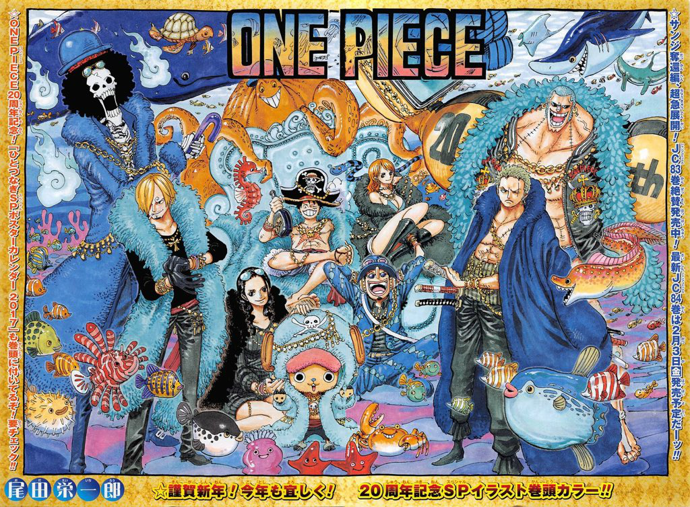
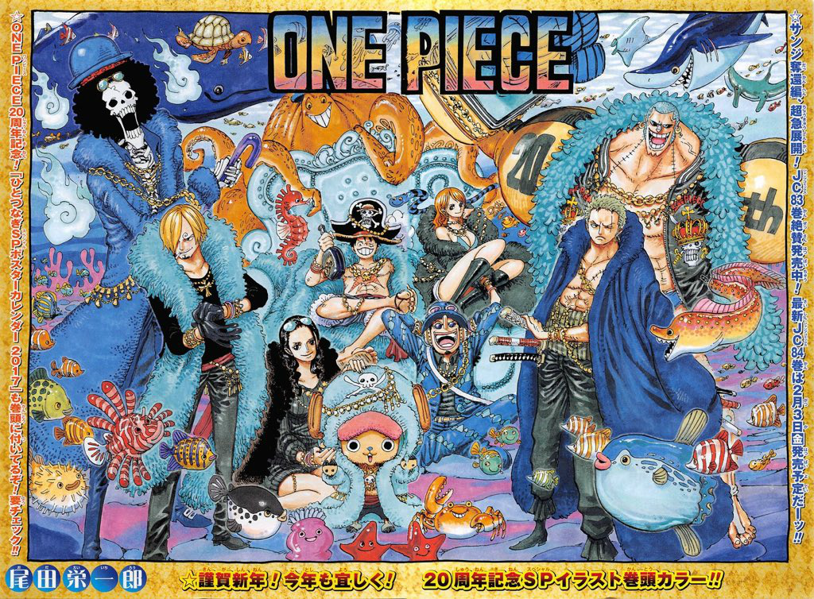

Pictures of the Crew

This is an image of the crew.
 This is the color spread Eiichiro Oda drew for the 20th anniversary of One Piece.
There is also a figurine set with all the figures.
One Piece is a story following Monkey D. Luffy on his adventure to become the pirate king. During his journey, he gains many friends and leaves each island better than before he arrived. Luffy rescues and befriends a swordsman named Roronoa Zoro, and they head off in search of the One Piece. They are joined in their journey by Nami, a navigator and thief; Usopp, a sniper and a liar; and Sanji, a womanizing chef. They acquire a ship named the Going Merry and engage in confrontations with notorious pirates of the East Blue. As Luffy and his crew set out on their adventures, others join the crew later in the series, including Tony Tony Chopper, a doctor and anthropomorphized reindeer; Nico Robin, an archaeologist and former assassin; Franky, a cyborg shipwright; Brook, a skeletal musician and swordsman; and Jinbe, a fishman helmsman; and they also acquire a new ship named the Thousand Sunny.
This is an image of the crew.
 This is the color spread Eiichiro Oda drew for the 20th anniversary of One Piece.
There is also a figurine set with all the figures.
This video is a short summary on One Piece and shows what the appeal is for such a long story.
Although this is an exaggeration, One Piece is definitely one of the most influential manga produced today, and this short really shows that.
Please contact us if you want to request more information about the series!